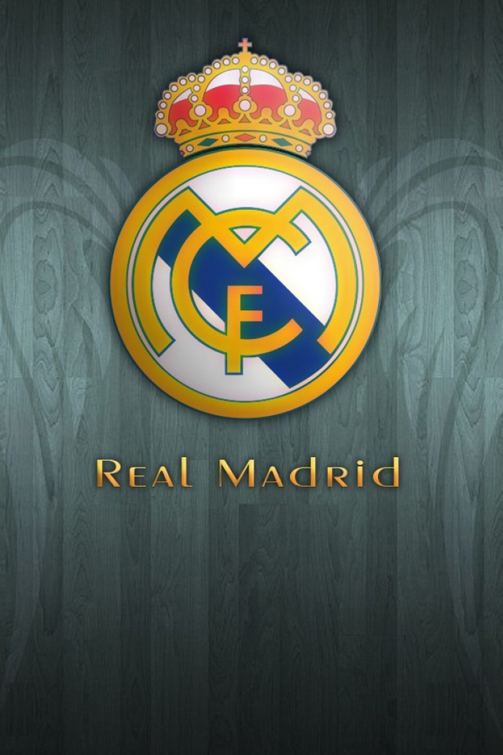

每个人都有着对自己来说独特的兴趣爱好，我也不例外，作为一个三分钟热度的人，我喜欢的东西可太多了，但让我最喜欢的还是读书和足球。
读书
杨绛先生曾说“年轻的时候以为不读书不足以了解人生，直到后来才发现如果不了解人生，是读不懂书的。读书的意义大概在于用生活所感去读书，用读书所得去生活吧。” 书籍能让人获得力量，读书能让人获得自信，读书的意义就在于更好的认识自己和感知世界。其实读书的意义很简单，它是你迷茫中黑暗的灯塔，是你陷入困境想要勇往直前的勇气，是你在风雨中奔跑一把无形的保护伞，是你认识自己认知世界的一把钥匙。古人云腹有诗书气自华，书籍能让人获得力量，读书能让人获得自信。读书能让我们穿越古今中外，去看大千世界，读书可以提升我们的才华，读书可以让人修身养性，读书可以让人明辨是非，读书也可以让我们享受人生。所以我喜欢读书。
足球
在运动方面，我最爱的莫过于足球。足球运动是世界上第一运动，它体现了运动中力量和速度的完美结合。 它就像是自然界中的猎豹，它奔跑的速度、节奏、动感、力量以及舒展的线条都给人一种美的享受。 这种美是力量之美、速度之美、灵性之美。 因为是运动，也就被赋予了一种精神———竞技精神：公平公正，勇敢拼搏，积极进取，荣誉至上，争当胜者。 这种足球精神应是足球魅力最核心的部分。 在它的感召下，我们看到激情和技术随心所欲的挥洒，看到球迷为之癫狂，为之忘我的沉醉状态。 足球是圆的，恰恰表明它的不可预知性和颠覆性。 在足球的世界里，一切不可能都皆有可能，一切的结果都可能大大出乎人们的预料之外，强者并非就一定是胜者，弱者也并非就一定是败者。而我最喜欢的球队是皇马。

皇家马德里足球俱乐部（Real Madrid CF），简称“皇马”，是一家位于西班牙首都马德里的足球俱乐部，球队成立于1902年3月6日。皇家马德里夺得过14次欧冠冠军（夺冠次数欧洲足坛第一）、35次西班牙足球甲级联赛冠军（西甲第一）、20次西班牙国王杯冠军、12次西班牙超级杯冠军、5次欧洲超级杯冠军和7次俱乐部赛事世界冠军（其中国际足联俱乐部世界杯冠军5次，夺冠次数第一）。